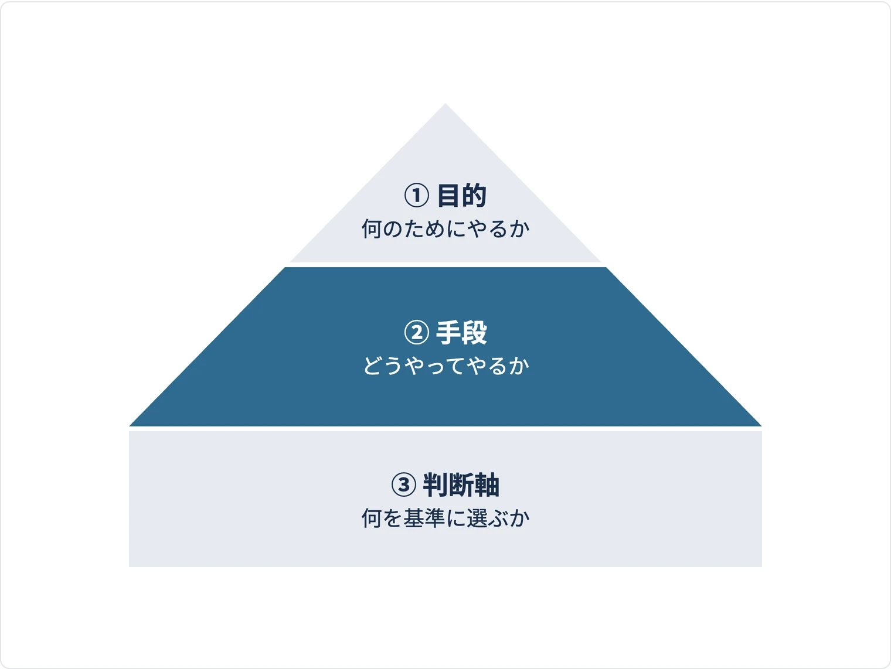
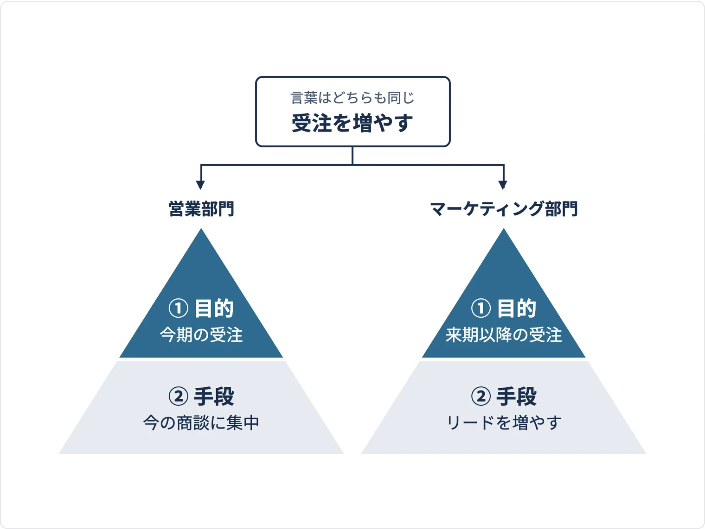
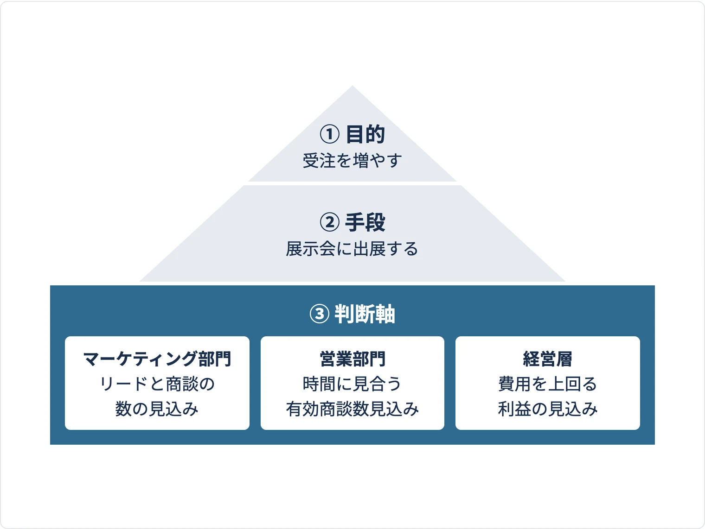
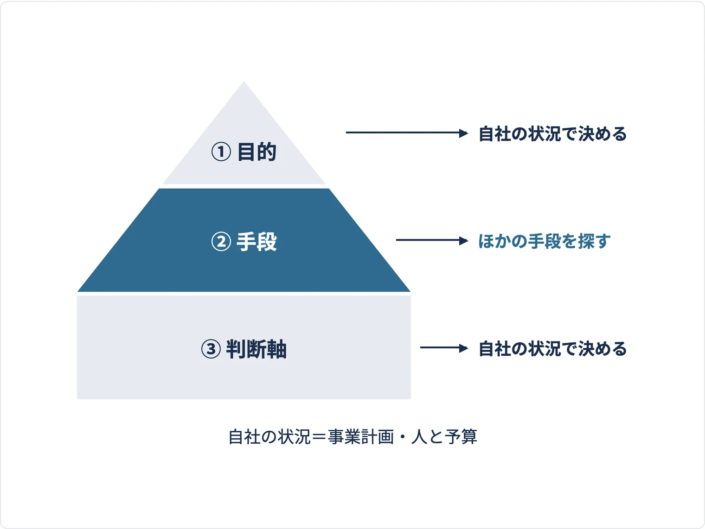

会議で議論が噛み合わないとき、原因は3つに分けられるー目的・手段・判断軸で見る意思決定のずれー
このような方に向けて書いています
次のいずれかに心当たりがあれば、この記事はお役に立てるかもしれません。
- 定例の会議で、同じ論点が毎回平行線のまま終わる
- 議論の後に、どうして伝わらないのだろうと感じることが多い
- 部門をまたぐ意思決定になると、急に話がまとまらなくなる
こうした噛み合わなさの多くは、意思決定の構造のどこかが少しずれているために起きていると感じています。
この記事では、意思決定を目的・手段・判断軸の3層でできたピラミッドとして捉え、どの層でずれているかを確かめる考え方を整理します。
本記事のポイント
- 議論が噛み合わない原因の多くは、目的・手段・判断軸の3層のどこかにある
- 目的のずれ：立場によって、見ている先が違う
- 手段のずれ：ほかの手段が見えておらず、2択のまま意見が割れる
- 判断軸のずれ：同じ手段でも、立場ごとに評価の基準が違う
- 解き方は層によって変わる：手段のずれはほかの手段を探し、目的と判断軸は自社の状況で決める
以下、マーケティング部門と営業部門の議論を例に、ピラミッドの層を上から順に整理していきます。同じ構造は、ほかの部門どうしの議論にも当てはまると考えています。
議論が噛み合わないのは、相性ではなく構造の問題
両部門とも筋が通っているのに話が平行線になる
たとえば、マーケティング部門と営業部門が出る週次の定例で、受注が足りないという話になったとします。マーケティング部門は、来期以降の受注まで見据えて、入口のリードを増やしたいと考えます。営業部門は、今期の受注に間に合うのは提案まで進んだ商談だけなので、今から入るリードに時間を取られると、今期の受注を落としかねないと考えます。どちらもそれぞれの立場から見れば筋が通っているため、話は平行線のまま時間切れになりがちです。
原因は案を支える意思決定の構造にある
話がまとまらないまま会議が終わると、相性や伝え方の問題だと考えてしまうことはないでしょうか。しかし、原因は相性や伝え方よりも、案を支える意思決定の構造にあるケースが多いと感じています。
意思決定の構造を、目的・手段・判断軸のピラミッドで整理する
目的が上、手段がその下、判断軸が土台
意思決定の構造は、図1のような3階層で表せます。いちばん上の層が①目的、その下の層が②手段で、どの手段を選ぶかを決める③判断軸が土台です。意思決定に至らない多くの場合、原因はこの3階層のいずれかに課題があります。

図1 会議で話しているのは②の手段。ずれは①〜③のどの層でも起きる目的のずれが起きる構造
まず、いちばん上の①目的の層です。図2のように、受注を増やすという同じ言葉から、中身の違う目的と手段が出てきます。今期の数字を作る営業部門は今期の受注を、将来の見込み客を作るマーケティング部門は来期以降の受注を見ているからです。どちらも受注を増やしたいと言っているので、目的は同じだと思い込みが生じます。そのため、目的のずれに触れないまま、今ある商談を受注につなげるか、リードを増やすかという手段の話だけで話が平行線になりがちです。今回の例は時間軸のずれでしたが、狙う顧客や、何を成果とするかなど、ずれの種類はさまざまです。

図2 ①目的のずれ：同じ言葉でも、時間軸が違う手段のずれは、他の手段が見えていないときに起きる
目的が揃っても、手段が少ないと意見が割れる
次に、目的の下にある②手段の層です。今度は、同じ営業部門とマーケティング部門が、問い合わせフォームの項目を話し合う例で考えます。目的のすり合わせはできていて、どちらも問い合わせから受注を増やしたいと考えています。
営業部門は、問い合わせフォームの項目を増やし、従業員数を追加で聞きたいと考えます。会社の規模が分かれば、連絡する相手の優先順位を決められるからです。
一方、マーケティング部門は、項目を減らしたいと考えます。項目が多いほど、入力の途中でやめる人が増え、問い合わせ数が減るからです。
受注のもとになる商談の数は、問い合わせ数×商談化率、つまり問い合わせの数と、そのうち商談に進む割合の掛け算で表せます。営業部門は商談化率を、マーケティング部門は問い合わせ数を上げようとしています。どちらも筋は通っていますが、項目を増やすか減らすかの2つしか手段が見えていないと、議論は平行線になります。
手段で意見が割れたら目的に立ち返る
先の例において、項目を増やすか減らすかの2択になったのは、営業部門が知りたいことはフォームで聞くしかない、と両部門とも思い込んでいたからです。しかし、従業員数は、フォームで聞かなくても、届いた社名をもとに企業データベースから自動で取り込めます。フォームは社名と連絡先だけで済むので、マーケティング部門は問い合わせ数を落としません。営業部門も、取り込んだ従業員数をもとに、優先順位を付けて連絡できます。
さらには、従業員数を聞くことの目的に立ち返ると、営業の優先順位を決めることになりますが、この目的に立ち返ると、優先順位を決める要素が企業規模以外にないか、BANT（予算、権限、ニーズ、タイミング）などで、これまでの商談経験から検討することにより、企業規模から予算感を探る以上に、タイミングが重要であれば、導入予定時期を4択など入力負荷を減らす代替の手段を展開することもできます。
このように、意見が割れた際には、他に手段がないかを、その手段を討議する目的に立ち返って確かめることも有効です。
判断軸のずれは視点の違いから起きる
同じ案でも部門や立場で評価軸が変わる
最後に、ピラミッドの土台にある③判断軸です。目的が揃い、手段の候補が出ていても、どの案を採るかで、立場ごとに評価が割れることがあります。
例えば、受注を増やすために業界の展示会に出展するという同じ案でも、2部門に経営層を加えた3者では、評価の基準が違います。図3のように、マーケティング部門が気にするのは、出展でリードや商談が何件取れるかや、その獲得単価です。営業部門は、ブースに立つ時間に見合うだけ、受注につながる商談が何件取れるかを見ています。経営層は、費用と人を出展にかけることが、その投資から期待される利益が生まれるか、つまり投資対効果（ROI）を見ています。

図3 ③判断軸のずれ：同じ案でも、立場ごとに評価の基準が違う判断基準は各部門の評価指標と連動している
どの基準も、それぞれが日々追っている評価指標から来ているため、目的が揃っていても手放しにくい構造にあります。多くの会社で、マーケティング部門はリードや商談の件数、営業部門は受注、経営層は会社全体の利益で（上場企業の場合、株主から）評価されます。
基準を1つに揃えようと話を重ねても、互いの考えを確かめ合うだけで終わりがちです。基準が割れたら、まずそれぞれが何の数字で評価されているかをまとめることが重要です。
その上で、会社における数値は経営層の視点にあたる投資対効果が最上段の目的になるため、部門ごとで評価指標からくる判断基準が割れ、議論が平行線になった際には、経営層など上位の役職者の視点を仰ぐことが、平行線からの脱却につながる手段になります。
分類するだけでは解決しない
どの層でずれているかが分かると、どちらが正しいかではなく、どこで食い違っているかを話せるようになります。
ずれの要因ごとの解決方法
一方、図4のように、ずれる層によって解決方法は異なります。②手段のずれは、今回の外部データのように、現状ある候補以外に手段がないかを探すと解けることがあります。他の手段の候補を挙げるのは、AIも得意です。
一方、①目的と③判断軸のずれは、どれを優先するかの問題で、正解は会社ごとに異なります。どの目標をどの時間軸での達成を目指すかという事業計画は会社の状況や資本構成により異なります。
また、ずれは1つの層とは限りません。目的を揃えたつもりでも、手段のずれを解いたあとに、判断軸や目的のずれが見えてくることもあります。

図4 ②手段のずれはほかの手段を探し、①目的と③判断軸は自社の状況で決めるまとめー平行線の議論を解ける問題として捉え直す
これまで述べたように、議論が噛み合わない原因は、相性や伝え方よりも、案を支える意思決定の構造にあることが多いと考えています。
改めて整理すると、受注をどう増やすかの議論に限らず、意見が割れたら、①何のための施策か、②他に手段はないか、③何を基準に選ぶか、を確かめます。①の目的か③の判断軸が部門や経営層の間で揃わなければ、自社の状況で決めます。
どの層のずれかが分かれば、噛み合わない議論も解ける問題として捉え直せると感じています。
事業を進める上で、部門をまたぐ会議の進め方についてお悩みがありましたら、本記事で挙げたような考え方に沿って、論点の整理から合意形成後の実行まで、必要な領域で伴走します。お気軽にご相談ください。
監修者情報
サムライスタイル株式会社 代表取締役 橋本 圭司
事業会社・Web系ベンダー双方での経験とBtoC・BtoBで多様な業界30社以上のインハウス支援を経験。マクロでの業界理解に基づく戦略立案からミクロでの施策立案・実行まで伴走し、特に獲得領域におけるリスティング・動画広告運用からLP改善、CRMへの接続までを得意とする。
詳細のプロフィールはこちら→